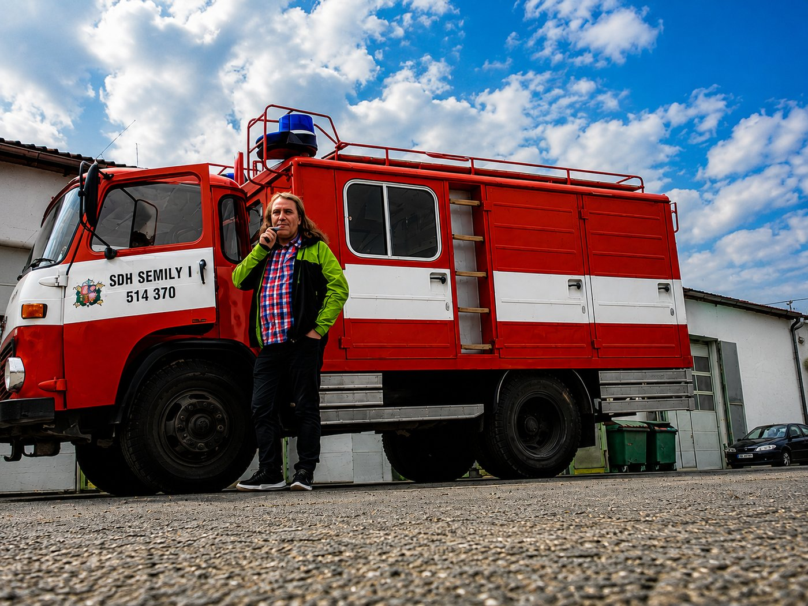

Z kabiny autobusu do kódu
Jsem Luděk. Roky jsem jezdil autobusem po Evropě, nějaký čas pobýval v italském Lerici a dnes tvořím vlastní aplikace i chytrou domácnost. Tady sdílím své cesty a projekty.

Cesty a projekty z mého života
Cestování
Vlastní fotografie a zážitky z Evropy. Itálie, severské cesty i místa, kam mě zavedla práce.
Vybrat cestu →Moje aplikace
Nástroje, které si stavím pro finance, plánování cest, jídlo a práci řidiče. Ukázky toho, jak fungují.
Prohlédnout aplikace →Chytrá domácnost
Světla, topení a každodenní rutiny v jednom bytě. Co jsem si postavil a jak se systém osvědčuje v praxi.
Nahlédnout do domácnosti →O mně
Za volantem jsem od roku 1997. Nějaký čas jsem pobýval v Lerici v Ligurii, nedaleko Toskánska. Věnoval jsem se také výpočetní technice a provozoval e-shop. Dnes jezdím jako řidič autobusu u regionálního dopravce.
Ve volném čase rád vařím italsky, zajdu na ryby, zahraji si tenis nebo na bicí. Jsem také členem SDH Semily. Baví mě hledat vlastní řešení pro věci, které používám každý den.
Web i aplikace vznikají ve volném čase jako moje osobní projekty.

Prohlídka webu na videu
Cesty, Itálie a moje vlastní projekty v krátké prohlídce s českým komentářem.
CESTOVATEL69 · NOVINKY
AI a finance
Český přehled novinek z umělé inteligence a financí: video, grafy a odkazy na zdroje.
Otevřít nejnovější přehled →Tipy na výlety
Partnerský odkaz: pokud přes něj uskutečníš rezervaci, mohu získat provizi.